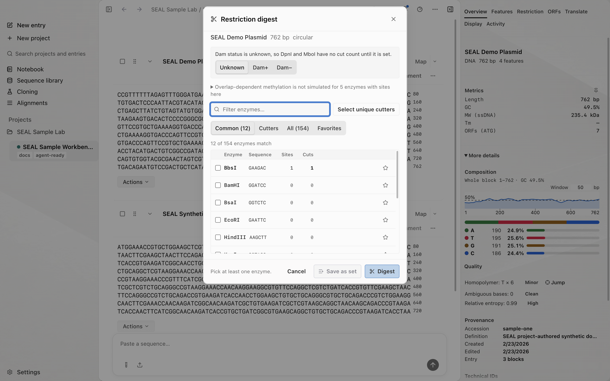
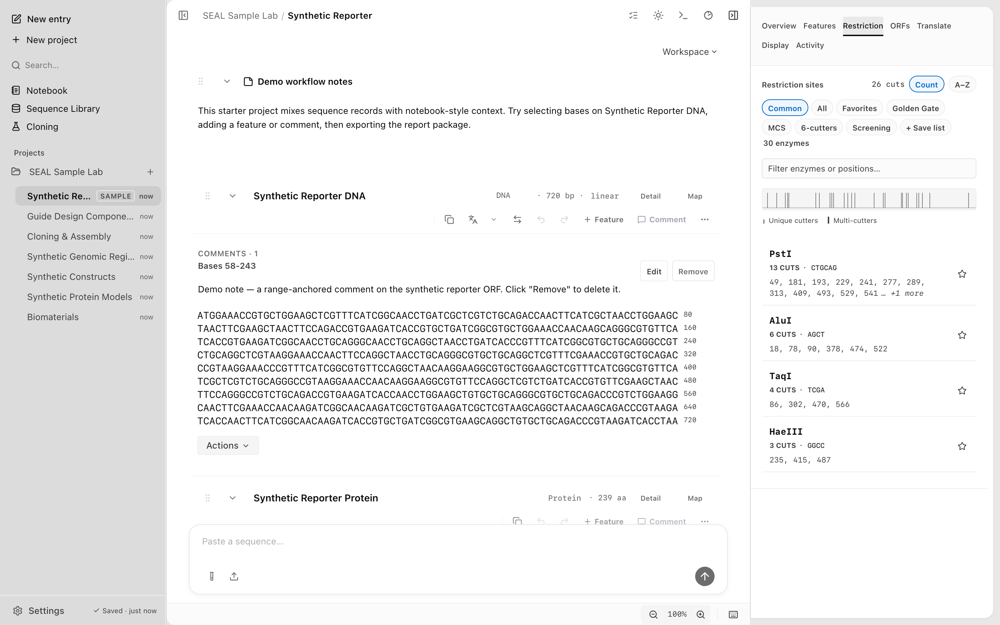

Restriction digest
Screenshots and recordings show the direct edition. Compare editions.
Map and simulate restriction cuts across the built-in enzyme set. Run a digest from the CLI, over MCP, or in the desktop app, and get cut positions, fragment sizes, and fragment sequences for linear or circular DNA.
Watch the walkthrough
View an annotated plasmid and check the fragments predicted for a chosen enzyme.
1:01 · AI narrationDownload video (14.2 MB)English captions
Read the transcript
In the Cloning and Assembly Entry, select SEAL Demo Plasmid. This is a synthetic circular DNA example with seven hundred sixty-two bases. Click Map to display its circular map. The colored regions represent annotations, and the enzyme labels mark predicted restriction cuts.
Click the AluI site at position one hundred forty-six to inspect its location. Then open the block's Actions menu and choose Restriction digest.
Choose Cutters to focus the list on enzymes with sites in this sequence. Select AluI and read the preview before creating anything. For this full circular block, the summary reports two cuts and two linear fragments. Their lengths are seven hundred forty-two and twenty bases, which add back to the original length.
Click Digest. SEAL creates a separate block for each fragment and links the results to the source block.
Digest a sample plasmid
Start with the Sample Lab loaded. This example follows a circular map through to two sequence fragments.
- In the sidebar, open SEAL Sample Lab → Cloning & Assembly. Click SEAL Demo Plasmid and check its header: 762 bp · circular.
- Click Map in the block header. Click the AluI label near position 146; the map readout shows AluI · cut 146.
- Open Actions beneath the block and choose Restriction digest.
- Choose Cutters, then select the checkbox beside AluI. Under Digest summary, check that the scope is Full circular block, with 2 cuts and 2 linear fragments.
- Read the preview sizes: 742 bp and 20 bp. They total the source's 762 bp.
- Click Digest. SEAL adds one sequence block for each fragment, with links back to the source plasmid. Check the two new block lengths against the preview.
To inspect the cuts without adding fragments, close the dialog with Cancel.
Run a digest from the CLI
Use seal digest with a sequence and one or more enzymes. The sequence is a positional argument (raw text or a file path) or stdin. Pass enzymes as a comma-delimited list to --enzymes.
seal digest ATGAAAGAATTCGGATCC --enzymes EcoRITo cut with more than one enzyme in the same reaction, list them together. Order does not matter; every recognition site for every named enzyme is found.
seal digest myseq.fa --enzymes EcoRI,BamHIEnzyme names match the built-in panel. SEAL ships 154 built-in enzymes. To check which enzymes have a recognition site before you commit to a digest, run seal sites (see the CLI reference), which can also list unique cutters and non-cutters.

Linear vs circular
Topology changes how cuts at the ends of the sequence resolve. Set it with --topology. The default is linear.
| Topology | Behavior |
|---|---|
linear | A sequence with two ends. n cuts yield n + 1 fragments. |
circular | A closed loop, such as a plasmid. n cuts yield n fragments, and the span across the origin is one fragment. |
seal digest ATGAAAGAATTCGGATCC --enzymes EcoRI --topology circularSet the topology to match the molecule you are cutting. A plasmid digested as linear reports one extra fragment, because the run-out across the origin is split into two ends instead of joined into one.
Preview and JSON output
Use --preview for a dry run that shows cut positions and fragment sizes without emitting the full fragment sequences. This is useful for planning a digest before you commit to it.
seal digest ATGAAAGAATTCGGATCC --enzymes EcoRI --previewIn preview mode the command prints the enzyme name and cut position for each recognition site found, then the resulting fragment size list in base pairs. No fragment sequences are emitted.
Add --json for machine-readable output that works in pipelines. With --preview --json you get a DigestPreviewOutput object with cuts, fragmentSizes, and fragmentCount fields.
seal digest ATGAAAGAATTCGGATCC --enzymes EcoRI,BamHI --preview --jsonWithout --preview, --json returns the full digest result including fragment sequences. For the exact shapes of digest output across the CLI, MCP, and the app, see the IO contract.
Reading the results
A digest result has two parts: the cuts and the fragments.
- Cuts name each enzyme and the position where it cuts. An enzyme can appear more than once if it has multiple recognition sites.
- Fragments are the pieces between cuts, reported as sizes in base pairs and, unless you used
--preview, as sequences.
To pour the fragment sizes onto a simulated gel, pass them to seal gel --sizes, or run seal gel with a block and enzyme list to digest and lane it in one step.
Multi-cut click-through in the Inspector
In the desktop app, when an enzyme cuts at more than one position, each comma-separated cut position in the Inspector becomes a clickable button. Click a position to jump the sequence view to that cut site. This lets you walk through every cut for a multi-cutter without reading coordinates by hand.

Over MCP
The same digest is available to agents as the digest MCP tool. It takes a workspace entry name or an inline sequence, an enzymes array, an optional topology override, and saveFragments to add each fragment to the workspace. To find sites without cutting, use restriction_sites with mode set to all, unique, or non-cutters. See the MCP tool reference.